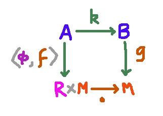
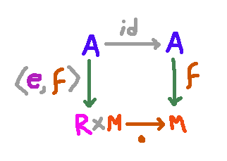
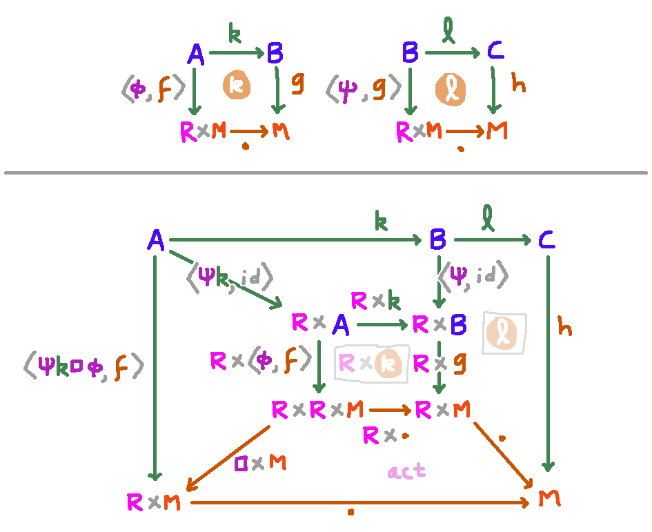
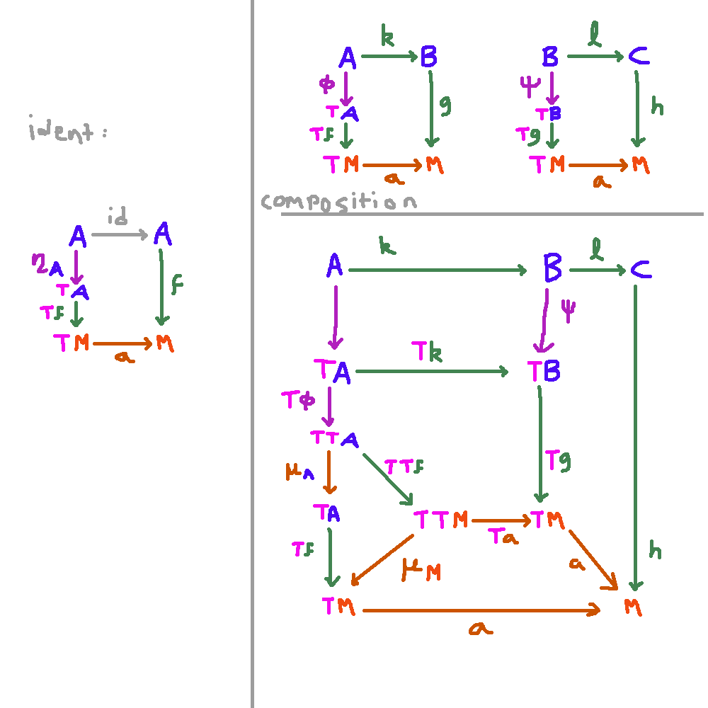

An Almost Slice Category
I just wanted to get this definition down in case I want to think about it later.
Suppose we have a category $\C$ with finite products.
Suppose we have a monoid object $(R, \square : R \x R \to R, e : 1 \to R)$, which has a monoid action $\cdot : R \x M \to M$ on an object $M$.
With this equipment, we can define another category,
which is sort of like the slice $\C / M$.
Its objects are the same as $\C / M$: they're
maps $f : A \to M$ into $M$. Now to be a morphism
from $f : A \to M$ to $g : B \to M$ you need to supply
a $k : A \to B$ but also a $\phi : A \to R$
such that the following diagram commutes:

The identity map from $f$ to itself is given by

which commutes by monoid action laws. Composition works according
to the following diagram chase:

Zero morphisms
Suppose we have a subset $Z$ of all of the morphisms into $R$,
thought of as morphisms that are "close enough to the identity".
If it satisfies
- $e \in Z$
- If $\psi \in Z$ then $\psi k \in Z$
- If $\phi \in Z$ and $\psi \in Z$, then $\phi \square \psi\in Z$
Then the subset of morphisms of the above category where $\phi \in Z$ is a subcategory.
A Monadic Generalization
Suppose we have a monad $T : \C \to \C$ and a monad algebra $\cdot : TM \to M$. Suppose for each $A$ there is subset of the morphisms $A \to TA$ that are designated "$T$-boring". They are required to satisfy the following axioms:
- $\eta_A$ is $T$-boring.
- If $f, g : A \to TA$ are $T$-boring, then their kleisli composition $\mu_A \o Tg \o f$ is.
- If $\psi : B \to TB$ is $T$-boring, and $k : A \to B$ is any map,
then there exists a $T$-boring map $\phi : A \to TA$ such that $\phi \o k = Tk \o \psi$.
Then we define a category whose objects are maps into $M$, and whose morphisms from $f : A \to M$ to $g : B \to M$ consist of a map $k : A \to B$ and a $T$-boring map $\phi : A \to TA$ such that $g \o k = a\o Tf \o \phi$. Identities and composition work by the following diagrams:
